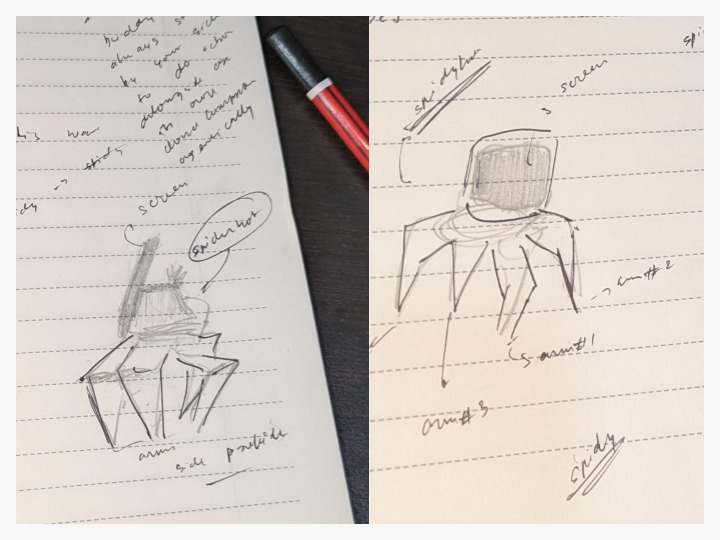
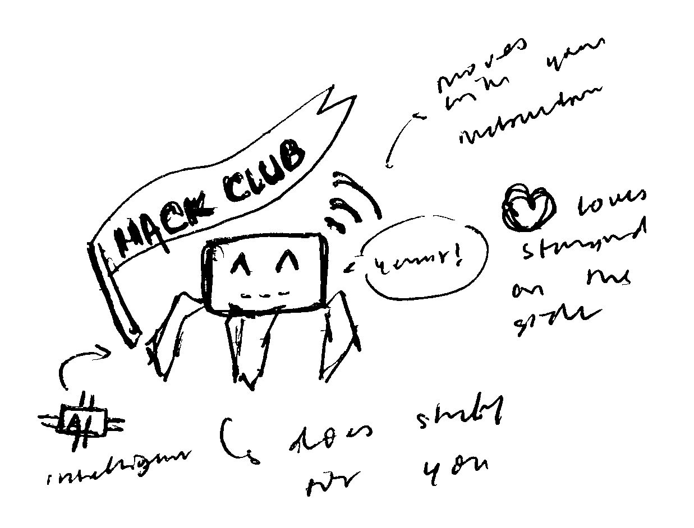
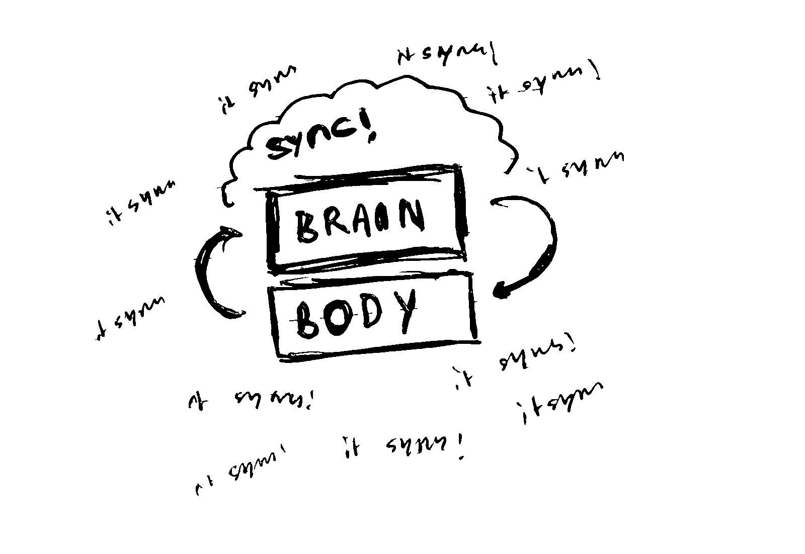

spidydroid is a super cool small droid project i'm starting to work on for fallen. the current decided thing is that i'll be building a small android that sits on your table and has its own computer, alongside limbs and visual sensories. it does not only act on your command after thinking a while, but also instinctively as a reaction to sudden stimulus from its environment. the idea is to create a moving computer powered by an agent that sits in it controlling (creepy but useful)



Hack Club is the world's largest nonprofit where teens come together to build cool stuff. Spidydroid is a project for #Fallen, one of its programs. The final stage of the program will take place when participants from different parts of the globe come together in Shenzhen, China, at the Maker Faire.